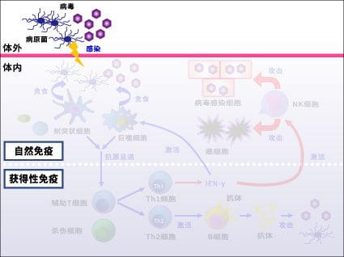
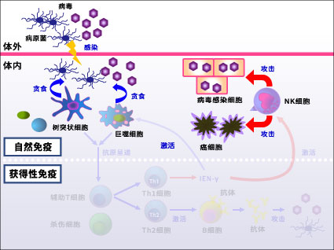
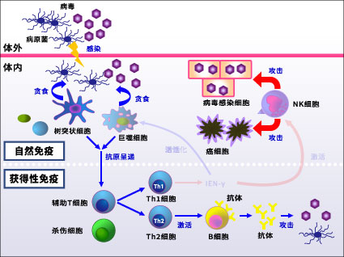
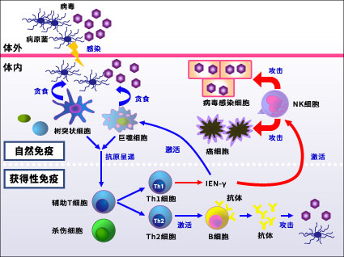

|
什么是免疫？乳酸菌和免疫力的关系为什么免疫很重要每到冬季就会流行感冒和流行性感冒，但是，处于同样状态之下，有的人容易罹患感冒和流行性感冒，而有的人却并不是这样。您知道那是为什么吗？那是与人体中的免疫系统有关。即使在寒冷的环境下，接触有感染力的细菌和病毒的人，免疫力好的人也能击退感冒，这很让人惊讶是吧？ 免疫的机制那么，就让我们来了解一下“免疫”在身体中是如何起作用的。免疫可分为“自然免疫”和“获得性免疫”两种。自然免疫处于免疫系统的最前沿。由最先攻击侵入身体的病毒等感染细胞的NK细胞、吞噬细胞（※1）和抗原提呈细胞（※2）等组成。而且，可产生攻击特定细菌和病毒的抗体的B细胞以及控制其作用的T细胞等“获得性免疫”也很活跃。
但是，促使我们体内的营养平衡崩溃的偏食生活，年龄增长以及遭遇压力等因素会导致免疫力下降。结果造成易患感冒等感染症，极端一些可能陷入易得癌症的状态。此外，一般来说小孩子和老人的免疫力比较低。与起着重要作用的免疫功能有很大关系的是“有益菌”乳酸菌。 ※1 将细菌、病毒等异物引入细胞内进行处理的细胞。 免疫的要点
■要点1 ■要点2 【专栏】细菌和病毒的区别在哪里？
细菌体内拥有细胞，可以自我繁殖。而仅有遗传信息的病毒会进入其他的细胞内繁殖。细菌会释放毒素从外侧攻击细胞，而病毒则会进入细胞内部并从内侧进行攻击。 免疫的机制
免疫的机制
免疫的机制
免疫的机制
|